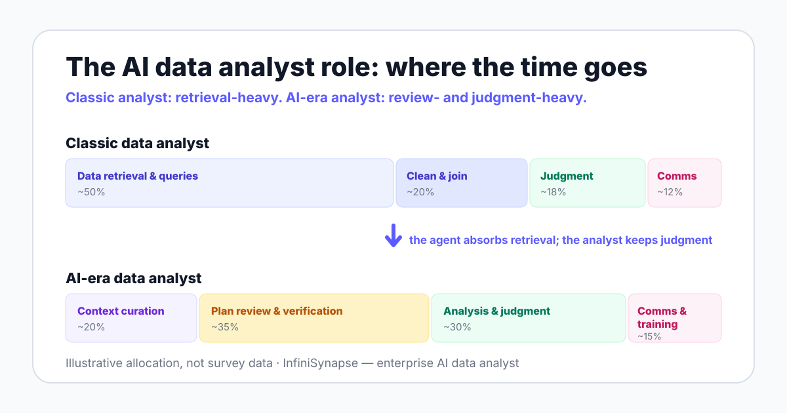

AI Data Analyst Job Description: Role, Responsibilities, and Skills
A complete, copyable job description for the AI data analyst role — plus a skills matrix, ten interview questions with scoring notes, honest salary guidance, and a decision framework for whether you should hire at all. Written for hiring managers drafting the post and candidates evaluating it.
AuthorInfiniSynapse Research, product and data architecture team
Published2026-06-11 · Last verified 2026-06-12 · Next review 2026-09-12
Evidence baseAcademic agent research (ReAct, BIRD, 2025 data agent surveys), US Bureau of Labor Statistics outlook data, NIST AI RMF, and InfiniSynapse product documentation.
Disclosure: This page is published by InfiniSynapse, which builds an enterprise AI data analyst. The JD template, skills matrix, and interview questions are written to be vendor-neutral: you can use them whether or not your team ever runs our product.
TL;DR
The AI data analyst role is a supervision job, not a query-writing job: the analyst curates agent context, reviews analysis plans before execution, and verifies evidence trails. The copyable JD template below is built around that shift.
Verification is the hard skill to hire for. On the BIRD benchmark, human engineers reach 92.96% execution accuracy and models still trail — your hire exists to close that residual gap, query by query.
Most teams should train an existing analyst and tool up before hiring externally. The decision section lists the three cases where an outside hire wins.
Direct answer: what is the AI data analyst role
An AI data analyst is an analyst who designs, supervises, and quality-controls AI-assisted analysis workflows. The job description centers on curating business context for agents, reviewing analysis plans before execution, verifying evidence trails, and owning escalation when results look wrong — instead of hand-writing every query. SQL, statistics, and governance awareness remain core requirements.
The role, defined
ai data analyst role: An AI data analyst is an analyst who designs, supervises, and quality-controls AI-assisted analysis workflows: curating the business context agents read, reviewing analysis plans before execution, verifying evidence trails, and owning escalation for low-confidence results.
The title carries two senses, and a JD must pick one. Our AI data analyst pillar guide covers the software category; this page covers the human role that supervises those systems.
The role exists because agents now execute the retrieval-heavy middle of analysis work. Anthropic's Building Effective Agents defines agents as systems where the model directs its own process and tool usage — which moves the human job up a level, from doing the steps to governing them.
Three duties define the day-to-day. First, context curation: the agent only knows the metric definitions, data dictionaries, and analysis playbooks someone maintains — the memory layer we unpack in data agent memory explained.
Second, plan review: in systems with an explicit plan mode, the analyst checks sources, join keys, and time windows before anything executes. Third, evidence verification: every delivered number needs a reviewable trail, the discipline behind explainable AI data analysis.
92.96%
Human engineer execution accuracy on the BIRD text-to-SQL benchmark — models still trail this bar, which is why a human verification role exists at all. Source: BIRD
2022
The ReAct pattern showed that interleaving reasoning and acting reduces agent error — and that structure is exactly what a plan-reviewing analyst supervises. Source: arXiv 2210.03629
Much faster than average
Projected employment growth for data science roles per the US Bureau of Labor Statistics — demand for analytical judgment is rising, not falling, as agents spread. Source: BLS

Hire for the ability to catch a wrong answer, not the ability to write a fast query.
Copyable JD template
Copy the block below into your job post and edit the bracketed parts. Every line maps to a real duty described on this page — delete what your team will not actually do.
Role summary
[Company] is hiring an AI data analyst to own the quality of AI-assisted analysis across the business. You will curate the business context our data agents read, review analysis plans before they execute, verify the evidence behind every delivered number, and train business users to work with agentic reports.
You will not spend your days hand-writing routine queries. You will spend them making sure automated analysis stays correct, governed, and explainable — and doing the judgment-heavy analysis that agents cannot.
Responsibilities
Curate the metric definitions, data dictionaries, and analysis playbooks that form the agent's context, and keep them current as the business changes.
Review and approve agent analysis plans before execution: sources, join keys, time windows, and metric definitions.
Clear written communication with non-technical stakeholders.
Hands-on experience with at least one production database or warehouse (PostgreSQL, MySQL, Snowflake, or similar).
Nice-to-haves
Experience piloting or evaluating LLM-based analysis tools in a real workflow.
Python or similar scripting for independent verification of agent outputs.
Data governance, audit, or compliance exposure.
Domain depth in [your industry] — agents inherit none of it for free.
Skills matrix: what to test and how
Resumes for this role look identical to classic analyst resumes. The matrix below tells you why each skill changed meaning in an agent era, and how to test it live rather than take it on faith.
Skill
Why it matters in an agent era
How to test it in an interview
SQL reading and data modeling
Verification means critiquing queries you did not write; fluent reading beats fast writing
Hand over an agent-generated query with one wrong join; ask the candidate to find it
Statistics fundamentals
Plausibility checks on aggregates are the cheapest defense against confident wrong answers
Show a suspicious average; ask what checks they would run before believing it
Context curation
Agents inherit the quality of the definitions they read; stale context produces wrong answers politely
Ask them to draft a metric definition for "active user" and defend its edge cases
Plan review
Catching an error before execution costs minutes; catching it after a board meeting costs trust
Give a flawed analysis plan with three seeded errors; score how many they catch
Evidence verification
Trust comes from trails, not fluency — someone must actually read them
Ask: "the agent says churn rose 12% — walk me through your verification, step by step"
Governance awareness
Credential scopes, audit needs, and risk vocabulary decide whether agents reach production data
Ask what database permissions an agent should get on day one, and why
Business translation
Agents execute specs; ambiguous specs get faithfully ambiguous answers
Give a vague executive question; ask them to write the agent-ready spec
How this differs from a classic data analyst JD
If you start from your old analyst JD and add the word "AI," you will hire the wrong person. The differences run through every section of the post.
Dimension
Classic data analyst JD
AI-era data analyst JD
Core output
Hand-written queries, dashboards, ad-hoc pulls
Reviewed, evidence-backed agent analyses plus curated context
Time allocation
Mostly retrieval: finding, cleaning, joining data
Mostly judgment: plan review, verification, escalation
Tooling
SQL editor, BI platform, spreadsheets
A data agent platform — with the same fundamentals underneath
Context owner, then agent program lead or data governance
The failure-mode row deserves emphasis. A classic analyst fails visibly, by being slow; an AI-era analyst fails silently, by approving plans without reading them — which is why the interview questions below test skepticism, not enthusiasm.
10 interview questions that actually test the role
Each question below includes what a good answer sounds like. None of them can be answered well by someone who has only watched product demos.
"Walk me through how you would verify a revenue number an agent produced." Good answers name a second computation path, row-count checks, and time-window confirmation — in that order, unprompted.
"Here is an analysis plan with three seeded errors. Find them." Strong candidates catch the wrong join key first; weak ones comment on formatting.
"Our agent says churn rose 12% last month. What do you do before telling the CFO?" You are listening for verification instinct over narrative instinct.
"How would you define 'active user' for an agent's knowledge base?" Good answers first ask which business decision the metric serves.
"When should an agent result be escalated to a human re-run?" Look for explicit criteria: low confidence, new data sources, deltas outside historical range.
"What database permissions would you give a data agent on day one?" The only good answer starts with read-only and scoped credentials.
"A business user says the agent's answer 'feels wrong.' What is your process?" Good answers reproduce the analysis from the evidence trail, not from scratch.
"How do you keep metric definitions current as the business changes?" Look for an ownership process with named reviewers, not tooling talk.
"Tell me about a number you shipped that turned out wrong. What changed afterward?" Honest specifics beat polish; no story at all is a red flag for this role.
"What would you check before connecting a new data source to the agent?" Good answers cover schema review, credential scope, and a small validation query set with known answers.
Salary and market notes
We deliberately publish no salary figures: the title is too new for reliable public benchmarks, and any specific number on a vendor page would be an invention. Treat third-party pages quoting precise "AI data analyst" salaries with the same suspicion.
What the evidence does support is direction. The US Bureau of Labor Statistics projects much-faster-than-average employment growth for data science roles, which keeps sustained upward pressure on compensation across the data job family.
Practical guidance: anchor your budget to the senior data analyst rate in your market and seniority band, then adjust upward for governance and AI-workflow skills if your deployment touches regulated data. Compensation varies widely by market, industry, and seniority — your local comparables matter more than any national average.
Should you hire or tool-up first?
An honest vendor admission: many teams that ask us for this JD do not need a new hire yet. The role supervises agentic workflows — if you have no agent and no analyst, sequencing matters.
Tool up and train first when
You already employ an analyst who knows your schemas and metric politics
Your analysis backlog is mostly routine pulls an agent can absorb
You can grant read-only access and pilot on three known-answer questions
Metric definitions exist, even if imperfect — curation can start now
Hire externally first when
No one senior owns data quality or metric definitions today
Governance or regulation demands a dedicated, accountable owner
You are standing up an agent program across several departments at once
Your existing analysts want to stay hands-on-SQL specialists — a legitimate choice
If you are still deciding what the software side even is, read what is a data agent before writing the post — the role only makes sense against a clear picture of what it supervises. The category-level view of the human-plus-agent split is in the AI data analyst guide, and the rest of the cluster lives on the Category hub.
Who this page is for
Hiring managers drafting a post for a role their company has never hired before.
Candidates deciding whether a listed "AI data analyst" job is real supervision work or a rebranded reporting seat.
Data leads deciding whether to hire, retrain, or pilot tooling first.
When InfiniSynapse is not the right fit
InfiniSynapse suits teams whose new hire will supervise multi-source, governed analysis. If your role is really a dashboard maintainer or a one-warehouse reporting seat, classic BI tooling and a classic analyst JD will serve you better — and cost less.
Give the role a real environment before you post it
Connect a database read-only, run three questions you already know the answers to, and watch where human review is actually needed. That pilot will sharpen every line of your JD — and tell you whether you need the hire at all.
An AI data analyst designs, supervises, and quality-controls AI-assisted analysis workflows. Day to day, that means curating metric definitions and data dictionaries for agent context, reviewing and approving analysis plans, verifying evidence trails behind delivered numbers, and escalating low-confidence results. The role replaces hand-writing every query with judgment over an agent's plans and outputs.
How is an AI data analyst job description different from a classic data analyst JD?
The core output shifts from hand-written queries and dashboards to reviewed, evidence-backed agent analyses. Time allocation moves from data retrieval toward plan review and verification. Success metrics change from tickets closed to decision quality and error catch rate. The JD also adds new duties: context curation, credential scope ownership, and governance awareness such as NIST AI RMF familiarity.
Does an AI data analyst still need SQL?
Yes. You cannot verify a query you cannot read. An AI data analyst reviews agent-generated SQL and intermediate representations, checks join logic, and spot-checks aggregations against known answers. On the BIRD benchmark, human engineers reach 92.96% execution accuracy while models trail, so human SQL literacy remains the verification backstop in production analysis.
What salary should you budget for an AI data analyst?
No reliable public benchmark exists yet for this exact title, so treat any specific figure with suspicion. The US Bureau of Labor Statistics projects much-faster-than-average employment growth for data science roles, which keeps upward pressure on compensation. Budget against your local market rate for senior data analysts, then adjust for governance and AI-workflow skills.
Should you hire an AI data analyst or train an existing analyst?
Train first in most cases. Analysts who already know your schemas, metric definitions, and politics need weeks, not months, to learn plan review and context curation. Hire externally when you lack any senior analyst, when governance demands a dedicated owner, or when you are standing up an agent program across several departments at once.
What interview questions test AI data analyst skills?
Ask candidates to review a flawed analysis plan, to explain how they would verify a number an agent produced, and to define escalation criteria for low-confidence results. Strong answers reference join-key checks, second computation paths, and read-only credential scopes. Avoid prompt-trivia questions; they test tool memorization rather than analytical judgment.
Is the AI data analyst role a junior or senior position?
Treat it as mid-to-senior. The role exists to catch agent errors, and error-catching requires pattern knowledge that juniors have not yet built. A workable ladder: juniors verify recurring reports against checklists, mid-level analysts own plan review for new analyses, and seniors own context curation, escalation policy, and the credential scopes agreed with IT.
Methodology and review notes
Last updated: 2026-06-12 · Next scheduled review: 2026-09-12
The JD template, skills matrix, and interview questions were synthesized from published agent research (ReAct, the 2025 data agent surveys), public benchmarks (BIRD), the NIST AI Risk Management Framework, US Bureau of Labor Statistics occupational outlook data, and InfiniSynapse product documentation. The time-allocation diagram is explicitly illustrative, not survey data.
Salary policy: This page cites labor-market direction qualitatively from BLS and publishes no specific salary figures, because no reliable public benchmark exists for this exact title.
Conflict of interest: InfiniSynapse publishes this guide and sells in the data agent category — a company hiring this role is a likely buyer of our product. To reduce bias, the template and tests are vendor-neutral, and the page states plainly when teams should not hire or should not use our tool.
Update cadence: Reviewed every 90 days for terminology, source links, and schema consistency.